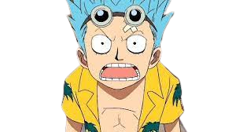
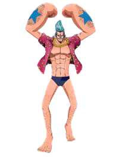
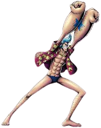
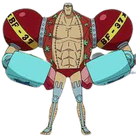

Franky
conhecendo o personagem
   Franky é o carpinteiro dos Chapéus de Palha e construiu o navio Thousand Sunny para a tripulação continuar sua jornada após a perda do Going Merry. Depois de sofrer um grave acidente, Franky reconstruiu o seu corpo com partes mecânicas e tornou-se um ciborgue. Quando Franky entrou para a tripulação de Luffy, ele já ganhou uma recompensa de 44,000,000 de berries. Como ele tem partes mecânicas, Franky pode fazer diversos truques com o seu corpo como esticar o seu braço, cuspir fogo e disparar armas. Durante o timeskip, além de dar um upgrade no seu corpo, Franky construiu o Franky Shogun, um robô gigante feito para usar nas batalhas. A recompensa de Franky agora tem o valor de 394,000,000 de berries